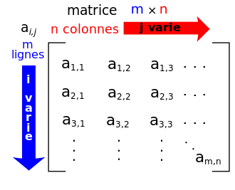

Tableaux à deux dimensions : les Matrices
Définitions et premiers exemples
Matrices
En mathématiques, on appelle matrice un tableau \(M\) de nombres \(a_{i,j}\) où \(i\) est le numéro de ligne et \(j\) le numéro de colonne. On parlera de matrice de dimension \(m\times n\) si la matrice possède \(m\) lignes et \(n\) colonnes.

Les matrices sont des éléments esentiels de l'algèbre linéaire, et elles sont un outils efficace dans beaucoup de problèmes aussi bien mathématiques qu'informatique.
Représentation informatique
Pour représenter informatiquement une matrice de nombres, entiers ou flottant, on utilise un tableau de tableau. Ainsi la matrice \(M = \begin{pmatrix}1&2&3\\4&5&6\end{pmatrix}\) sera représentée sous la forme suivante :
M = [[1, 2, 3], [4, 5, 6]]
En Python, il est souvent préférable de définir une matrice en utilisant la possibilité de sauter des lignes à l'intérieur de deux délimiteurs (paires de parenthèses, crochets, etc...) :
M = [
[1, 2, 3],
[4, 5, 6]
]
On peut alors accéder aux éléments de la matrice par la notation suivante M[1][2], ce qui correspond à l'élément d'indice 2 de la ligne d'indice 1, soit dans notre exemple \(6\). Autrement dit, il s'agit de l'élément de la ligne 1 et de la colonne 2 :
Une règle implicite
Mathématiquement, toutes les lignes d'un matrice sont de la même dimension. Or ce n'est pas obligatoire dans une construction de liste de listes en Python. En effet une variable telle que la suivante est tout à fait possible :
M = [
[1, 2],
[3, 4, 5, 6],
[],
[7, 8, 9, 10, 11, 12]
]
Lire une matrice
On considère la matrice suivante :
>>> M =[
[1, 2, 3, 4, 5],
[2, 4, 6, 8, 10],
[3, 6, 9, 12, 15],
[4, 8, 12, 16, 20]
]
- A quel nombre fait référence l'élément \(M[1][3]\) ?
- Comment obtenir le nombre \(15\) ?
- A quel nombre fait référence l'élément \(M[-1][2]\) ?
- A quel nombre fait référence l'élément \(M[0][-2]\) ?
A venir !
Parcourir une matrice
Parcourir une matrice
Pour parcourir une matrice, il faut utiliser deux boucles for imbriquées l'une dans l'autre :
-
Tester le code suivant sur une matrice \(M = \begin{pmatrix}1&2&3\\4&5&6\end{pmatrix}\).
Dans quel ordre apparaissent les éléments ?for i in range(2) : for j in range(3) : print(M[i][j]) -
Tester le code suivant, toujours sur la matrice \(M\)
Dans quel ordre apparaissent les éléments ?for j in range(3) : for i in range(2) : print(M[i][j]) - Dans le code précédent, que se passe-t-il si on écrit
print(M[j][i])? - Tester le code suivant, toujours sur la matrice \(M\)
Dans quel ordre apparaissent les éléments ?
for line in M : for elem in line : print(elem) - Est-il possible d'inverser le type de parcours précédent ?
- Tester le code suivant, toujours sur la matrice \(M\)
A quoi sert la fonction
for i, line in enumerate(M) : for j, elem in enumerate(line) : print(f"M[{i}][{j}] = {elem}")enumerate? -
Ecrire une fonction
parcoursIndicesLignes(M)qui effectue un parcours par indice et par ligne de la matrice qui lui est passée en argument. On pourra tester avec les matrices suivantes :M1 = [[0]] M2 = [[1, 2], [3, 4]] M2 = [[1, 2], [3, 4], [5, 6]] M3 = [[1, 2, 3, 4, 5], [6, 7, 8, 9, 10]]
A venir !
Initialisation de matrices
Pourquoi initialiser
Très souvent on va travailler sur un tableau et/ou une matrice dont on connait au préalable la dimension, et sur laquelle on va modifier les valeurs au fur et à mesure. Il sera souvent plus facile de travailler sur une matrice déjà pré-remplie avec des valeurs de départ - des zéros souvent, plutôt que d'être obligé de vérifier que le terme \(a[i][j]\) existe, et de faire un append dans le cas contraire.
Initialisation
- Avec un tableau à une dimension. Tester la ligne suivante :
Que fait ce code ?
T = [0]*10 - Avec des tableaux à deux dimensions :
- Tester la ligne suivante :
Que fait ce code ?
M = [[0]*10]*4 - Tester alors la ligne suivante :
M[0][5] = 777 - A quel objet est alors associé \(M\) ?
- Quel est le problème ?
- Tester alors le code suivant, :
M = [[0]*10 for i in range(4)] - Faites de nouveau l'affectation suivante
A quoi est-alors associé le nom
M[0][5] = 777M?
- Tester la ligne suivante :
Exercice : les carrés magiques
Carré magiques
Un carré magique d'ordre \(n\) est une matrice carrée \(n\times n\) telle que que la somme des nombres sur chaque ligne, sur chaque colonne et sur chaque diagonale principale soient égales.
- Vérifier que la matrice \(\begin{pmatrix} 4&9&2\\3&5&7\\8&1&6\end{pmatrix}\) est bien un carré magique.
- On se propose de construire une fonction vérifiant qu'une matrice de taille \(n \times n\) est bien un carré magique.
- Créer une fonction
estCarre(M)qui vérifie que la matrice \(M\) est bien carrée (son nombre de ligne est égal à son nombre de colonne). Cette fonction renverraTruedans ce cas, etFalsesinon. - Créer une fonction
sommeLigne(M,i)qui renvoie la somme des nombres de la ligne \(i\) de la matrice \(M\). - Créer une fonction
sommeColonne(M,i)qui renvoie la somme des nombres de la colonne \(i\) de la matrice \(M\). - Créer une fonction
sommeDiagPrincipale(M)qui renvoie la somme des nombres de la diagonale principale de \(M\) (diagonale dont les éléments ont le même numéro de ligne et de colonne). - Créer une fonction
sommeDiagSecondaire(M)qui renvoie la somme des nombres de la diagonale non principale de \(M\). - En utilisant les fonctions précédentes, créer une fonction
estMagique(M)qui renvoieTruesi la matrice \(M\) est magique, etFalsesinon.
- Créer une fonction
D'autres carrés magiques
Vous trouverez des carrés magiques de différents ordres sur les pages suivantes :